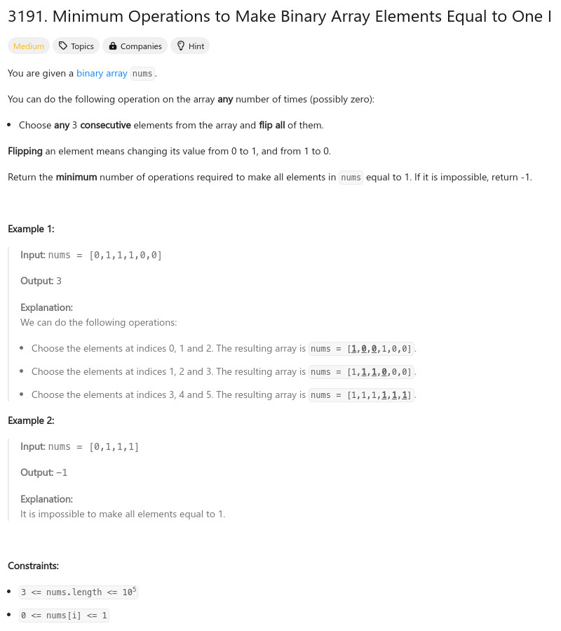

參考資訊：
https://github.com/doocs/leetcode/blob/main/solution/3100-3199/3191.Minimum%20Operations%20to%20Make%20Binary%20Array%20Elements%20Equal%20to%20One%20I/README_EN.md
題目：

int minOperations(int* nums, int numsSize)
{
int r = 0;
int cc = 0;
for (cc = 0; cc < numsSize; cc+= 1) {
if (nums[cc] == 0) {
if ((cc + 2) >= numsSize) {
return -1;
}
nums[cc + 1] ^= 1;
nums[cc + 2] ^= 1;
r += 1;
}
}
return r;
}